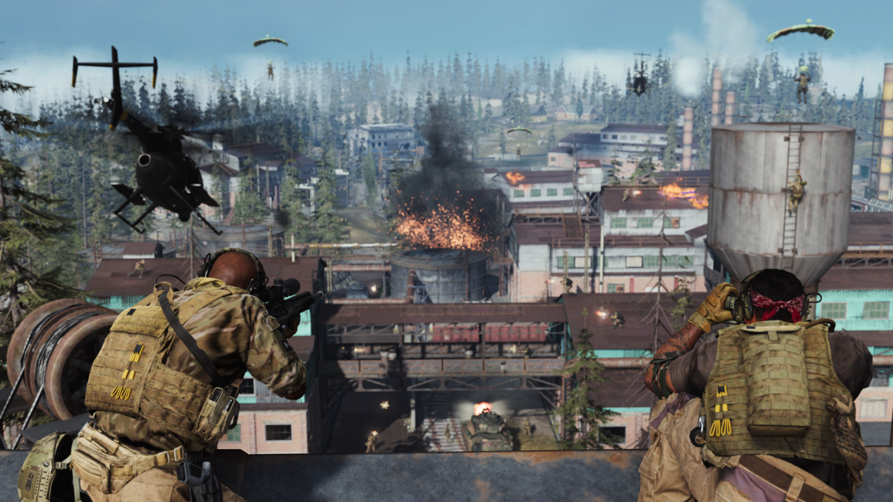

Groundwar is een aparte gamemode die te vinden is in multiplayer.
In deze gamemode spelen er 64 mensen in 2 teams tegen elkaar op een grote map.
Deze mappen zijn ontworpen voor veel spelers en alle mappen (behalve aniyah palace) zijn ook onderdeel van de Warzone map; Verdannsk.
Ground War word vak vergeleken met Battlefield en in tegenstelling tot de rest van de multiplayer gamemodes zitten er in deze gamemode vehicles, namelijk: de Tank, een helicopter, een buggy, een auto en een quad, die willekeurig spawnen over de map.
Groundwar bevat 4 grote maps waarom je de gamemode kan spelen: Aniyah Palace, Karst River Quarry, Krovnik Farmland en Tavorsk District.